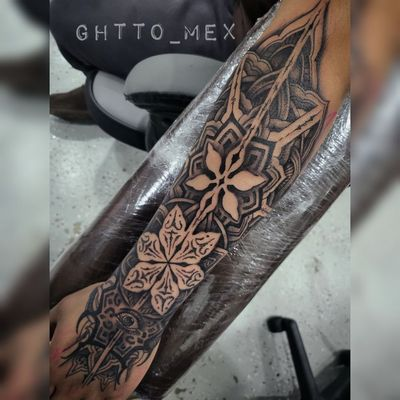
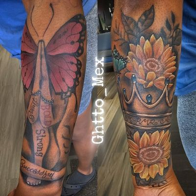
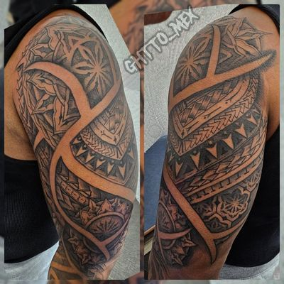
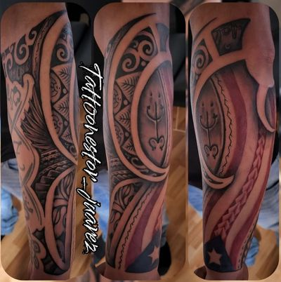

Sleeves
Tattoo sleeves
Planned as one composition, then built in stages.
There are two ways to end up with a sleeve. You can collect tattoos one at a time and hope they eventually meet, or you can plan the whole arm first and then fill it in over a series of sittings. The second way looks dramatically better and it is not more expensive, because you are not paying to fix the gaps afterwards.
Planning first means deciding where the piece breathes. The empty skin in a good sleeve is doing as much work as the imagery, and it is the first thing sacrificed when an arm gets filled piecemeal.
You will be told up front how many sittings the plan takes and what happens in each one.
What this covers
- Half sleeves and full sleeves
- Existing work assessed and worked around
- Black and grey, color, or both
- Planned as one composition before the first session
- Booked as a series with a schedule you know in advance
Tattoo sleeves in the gallery
17 pieces, all tattooed by Nestor Juarez.











Questions
How many sessions is a sleeve?
It depends on the design, and you will be given the number before booking rather than after. Sleeves are booked as a series with dates you know in advance.
Can you work around tattoos I already have?
Often, yes. Send photos of everything on the arm so the plan is built around what is actually there.
Should I plan the whole sleeve first?
Yes. Collecting tattoos one at a time and hoping they meet is what produces the gaps you then pay to fix. Planning first is not more expensive.
Other work
Black & grey Chicano realism
46 pieces in the gallery
Cover-up tattoos
2 pieces in the gallery
Portrait tattoos
16 pieces in the gallery
Religious tattoos
14 pieces in the gallery
Memorial tattoos
5 pieces in the gallery
Aztec and cultural tattoos
6 pieces in the gallery
Color realism tattoos
11 pieces in the gallery
Find us
Visit the shop
We are on 111th Street in Chicago Ridge, minutes from Oak Lawn, Worth, Alsip and Burbank.
5920 W 111th St
Chicago Ridge, IL 60415
(708) 770-2754
anointed.ink29@gmail.com
Serving
Chicago Ridge, Oak Lawn, Worth, Alsip, Palos Heights, Bridgeview, Burbank, Evergreen Park, Hometown, Palos Hills, Hickory Hills, Chicago's Southwest Side.
Hours
| Monday | 12:00pm to 7:00pm |
|---|---|
| Tuesday | 12:00pm to 7:00pm |
| Wednesday | 12:00pm to 7:00pm |
| Thursday | 12:00pm to 7:00pm |
| Friday | 12:00pm to 7:00pm |
| Saturday | 12:00pm to 7:00pm |
| Sunday | Closed |
Plus code M6RM+72 Chicago Ridge, Illinois